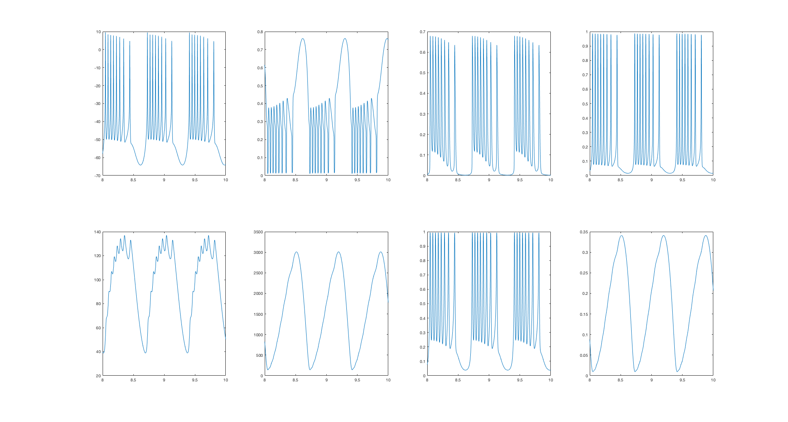

This is the readme for the models associated with the paper: Knowlton CJ, Kutterer S, Roeper J, Canavier CC (2017) Calcium dynamics control K-ATP channel mediated bursting in substantia nigra dopamine neurons: a combined experimental and modeling study. J Neurophysiol :jn.00351.2017 These model files were contributed by C Knowlton. To build and run the model on a linux/unix platform type: make ./fixed_finder > output.txt ./nmodel > output2.txt After a short while an output file is generated which can be read into your favorite graphing program. Matlab for example can produce the following plot load output2.txt; a=output2; z=4000; % look at the last couple of seconds of the run figure for b=2:9 subplot(2,4,b-1) plot(a(end-z:end,1),a(end-z:end,b)) end  For the other output.txt file column 3 (x) and 1 (y) are used in figures 6 7 and 8 for the V vs ADP phase plots.